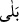
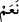

Arapça’da “evet” anlamına gelen “
” ve “
” kelimeleri arasında şu fark vardır: “
”, olumsuz sorudan sonra olumlu mânâ ifâde eder. Meselâ “Ben sizin Rabb’iniz
değil miyim?” sorusundan sonra gelen “bela” kelimesi, “Evet, sen bizim Rabb’imizsin”
demek olur ve iman mânâsına gelir. “
” ise soruda geçen olumsuzluğu doğrulamak
için kullanılır. “Ben sizin Rabb’iniz değil miyim?” sorusuna bu kelime ile cevap
verilmiş olsaydı “Sen bizim Rabb’imiz değilsin.” demek olurdu ve küfür anlamına
gelirdi.
Ayette anlatılanlar bir temsil ve canlandırmadır. Enfüsî ve afâkî deliller ortaya koyup
kendilerinde istîdad yaratarak Allah Teâlâ’nın insanlara, kendi rablığını bilme imkânı
vermesi, onları bu konuda şâhit tutmak olarak ifade edilmiştir. Yoksa zürriyetlerin
babaların sulbünden alınması ve onların kendilerine şâhit tutulması, soru sorulması ve
cevap verilmesi söz konusu değildir. Temsil ile anlatım, çokca kullanılan bir anlatım
şekli olup Kur’an’da, hadislerde ve beliğ söz söyleyenlerin sözlerinde sık rastlanır. Şu
ayet de buna misal verilebilir: “Sonra duman halinde bulunan göğe yöneldi, ona ve
arza: “İsteyerek veya istemeyerek gelin.” dedi. “İsteyerek geldik.” dediler.”
(Fussılet, 41/11)
“Tâ ki” bellerinden zürriyetlerinin alınması ve onları kendilerine şâhit tutması
konusunda “kıyâmet günü” hakikat ortaya çıktığı zaman “Biz bundan” Allah’ın
rubûbiyyetinin tek olduğundan ve onun koyduğu hükümlerden “habersizdik.” bu konuda
hiçbir delille ikaz edilmemiştik “demeyesiniz.” Yani, yaptıklarımızı böyle dememeleri
için yaptık.
İnsanlar, fıtrat üzere ve Hakk’ı tanıyacak bir kabiliyette yaratıldıklarına göre böyle
özür beyan etmeleri imkansız olur ve bundan âciz kalırlardı. Eğer ayet, temsil üslubu
üzere olmasaydı, aksine gerçekten şâhid tutma ve itiraf etme kastedilmiş olsaydı ve
Allah Teâlâ hikmetine binaen bu durumu unutturmuş olsaydı o zaman “Kıyamet günü
gelince, biz bundan gafildik.” demeyesiniz.” sözü doğru olmazdı. (Şeyhülislâm Sa‘dî
Çelebî’nin Haşiyesi’nde böyle geçmektedir.)
173. Yahut “Daha önce babalarımız Allah’a ortak koştu, biz de onlardan sonra
gelen bir nesildik (onların izinden gittik). Bâtıl işleyenlerin yüzünden bizi helâk
edecek misin?” dememeniz için (böyle yaptık).
“Yahut: “Daha önce” bizim zamanımızdan önce “babalarımız Allah’a ortak koştu,”
şirk koşmayı ortaya çıkardılar ve bunu yol edindiler. “biz de onlardan sonra gelen bir
nesil olduğumuz için öyle yaptık.” Doğru yolu bulamadık, delillerden istidlâle de güç